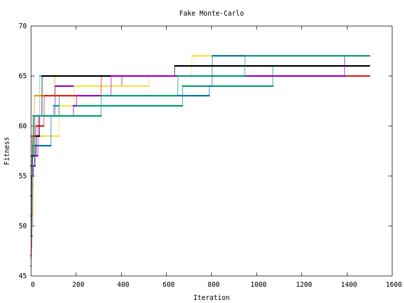
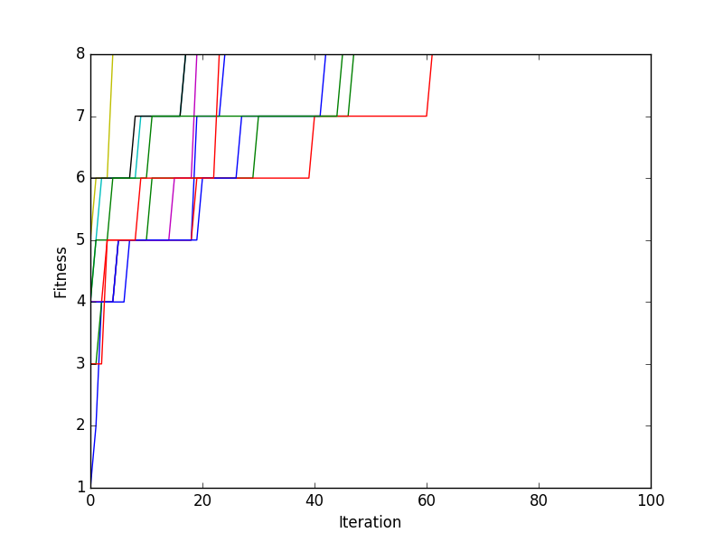
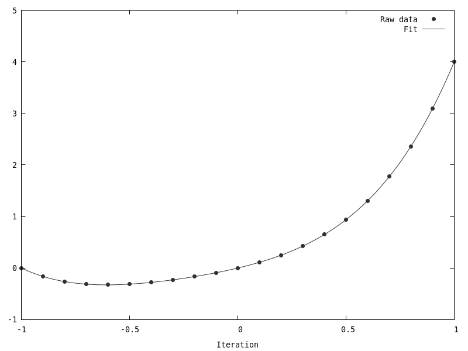
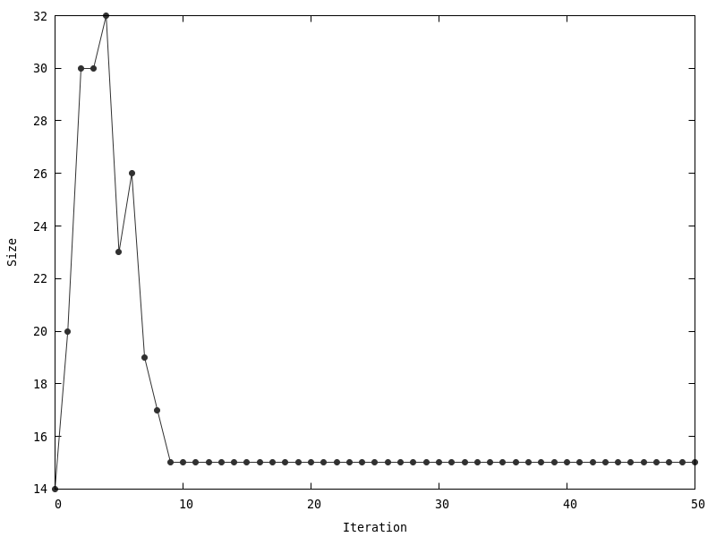
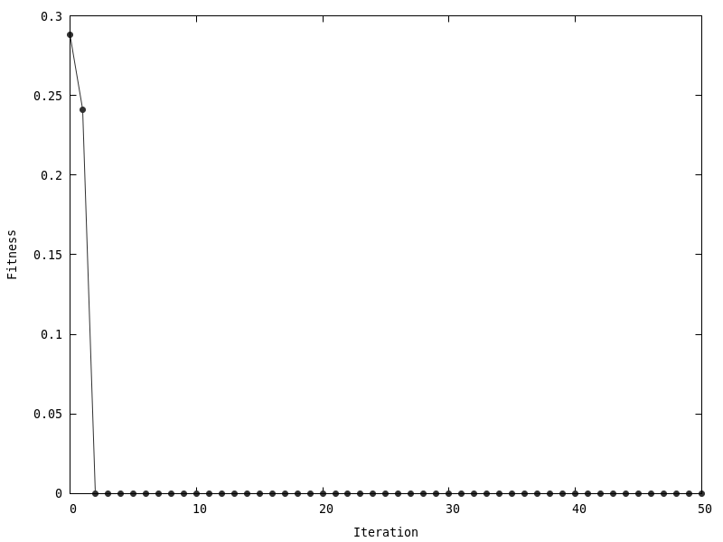

Welcome to Natural Computing Course Assignments’s documentation!¶
Assignment 1¶
- \[\frac{157}{76 \cdot 100} \cdot 100 \approx 2 \;.\]
- \[\left( 1 - \frac{157}{100 \cdot 76} \right)^{100} \approx 12.4\% \;.\]
Assume that the whole population consists of \(\{3, 5, 7\}\) only. Then we have
\[\begin{split}\left\{ \begin{aligned} \mathbb{P}[3] &= \frac{f(3)}{f(3) + f(5) + f(7)} \approx 0.11 \;,\\ \mathbb{P}[5] &= \frac{f(5)}{f(3) + f(5) + f(7)} \approx 0.3 \;,\\ \mathbb{P}[7] &= \frac{f(7)}{f(3) + f(5) + f(7)} \approx 0.59 \;.\\ \end{aligned} \right.\end{split}\]Calculating \(\mathbb{P}\)‘s for \(f_1\) is now a matter of replacing \(f\) with \(f_1\). We get
\[\begin{split}\left\{ \begin{aligned} \mathbb{P}'[3] &\approx 0.16 \;,\\ \mathbb{P}'[5] &\approx 0.31 \;,\\ \mathbb{P}'[7] &\approx 0.53 \;,\\ \end{aligned} \right.\end{split}\]which obviously yields a lower selection pressure.
Here’s the code:
1 2 3 4 5 6 7 8 9 10 11
def fake_monte_carlo(f: Callable[[int], T], n: int, iterations: int, out = None) -> Tuple[np.array, T]: max_f = 0 max_x = None for (x, fx) in map(lambda y: (y, f(y)), (np.random.choice([0, 1], n) for i in range(iterations))): max_x, max_f = (x, fx) if fx > max_f else (max_x, max_f) if out: print(max_f, file=out) return max_x, max_f
And the result:
Here’s the code:
1 2 3 4 5 6 7 8 9 10 11 12 13 14 15
def genetic_one_plus_one(f,n,iterations): mutation_rate = 1 / float(n) x = np.random.choice([0,1],n) scores = [] for i in range(0,iterations): x2 = np.array([0 for x in range(0,n)]) for i in range(n): if(np.random.uniform() < mutation_rate): x2[i] = 1 - x[i] else: x2[i] = x[i] if(f(x2) > f(x)): x = x2 scores.append(f(x))
And the result:
Function set: \(\{\wedge, \vee, \to, \leftrightarrow\}\), terminal set: \(\{x, y, z, true\}\), and the s-expression is:
\[\left(\to (\wedge\; x\; true)\; (\vee\; (\vee\; x\; y)\; (\leftrightarrow\; z\; (\wedge\; x\; y))) \right) \;.\]Here’s the code:
1 2 3 4 5 6 7 8 9 10 11 12 13 14 15 16 17
data = read_data() regressor = SymbolicRegressor(population_size=1000, generations=100, const_range=(.0, .0), init_depth=(2, 10), init_method='grow', function_set=('add', 'sub', 'mul', 'div', 'log', 'sin', 'cos'), p_crossover=0.7, p_subtree_mutation=0.0, p_hoist_mutation=0.0, p_point_mutation=0.0, verbose=1, n_jobs=-1) (n, _) = data.shape regressor.fit(data[:, 0].reshape(n, 1), data[:, 1]) print(regressor._program)
And the results:
  Fortunately, our fit converged really well with no undesirable effects.
Assignment 2¶
Here’s the code for computing ROC AUC scores for different test sets and parameters:
1 2 3 4 5 6 7 8 9 10 11 12 13 14 15 16 17 18 19 20 21 22 23 24 25 26 27 28 29 30 31 32 33 34 35 36 37 38 39
negsel2 () { java -jar $NEGSEL2 -alphabet file://"$ENGLISH_TRAIN" -self "$ENGLISH_TRAIN" $@ } roc_auc() { python3 - <<-___HERE from numpy import loadtxt from sklearn.metrics import roc_auc_score data = loadtxt('$1') print(roc_auc_score(data[:, 0], data[:, 1])) ___HERE } test_tagalog() { for _r in {1..9}; do cat <(cat "$ENGLISH_TEST" | negsel2 -n 10 -r $_r -c -l | sed 's/^/0\t/') \ <(cat "$TAGALOG_TEST" | negsel2 -n 10 -r $_r -c -l | sed 's/^/1\t/') > "$TEMP_FILE" echo "English vs. Tagalog, r = $_r:" $(roc_auc "$TEMP_FILE") rm -f "$TEMP_FILE" done } test_generic() { cat <(cat "$ENGLISH_TEST" | negsel2 -n 10 -r 4 -c -l | sed 's/^/0\t/') \ <(cat "$2" | negsel2 -n 10 -r 4 -c -l | sed 's/^/1\t/') > "$TEMP_FILE" echo "English vs. $1, r = 4:" $(roc_auc "$TEMP_FILE") rm -f "$TEMP_FILE" } test_tagalog test_generic "Hiligaynon" "$HILIGAYNON_TEST" test_generic "Middle English" "$MIDDLE_ENDLISH_TEST" test_generic "Plautdietsch" "$PLAUTDIETSCH_TEST" test_generic "Xhosa" "$XHOSA_TEST"
And here’s the output:
English vs. Tagalog, r = 1: 0.543534718425 English vs. Tagalog, r = 2: 0.739645981411 English vs. Tagalog, r = 3: 0.83112356479 English vs. Tagalog, r = 4: 0.791609713869 English vs. Tagalog, r = 5: 0.728244031347 English vs. Tagalog, r = 6: 0.668084791325 English vs. Tagalog, r = 7: 0.590725806452 English vs. Tagalog, r = 8: 0.520161290323 English vs. Tagalog, r = 9: 0.512096774194 English vs. Hiligaynon, r = 4: 0.797467741935 English vs. Plautdietsch, r = 4: 0.753403225806 English vs. Middle English, r = 4: 0.533887096774 English vs. Xhosa, r = 4: 0.832274193548
We notice that the best results are obtained for \(r\) of about 3. \(r = 1\) is basically a single letter and hence not enough information to make a reasonable conclusion. Too high an \(r\) is again meaningless as there are almost no such long words.
And about other languages, one notices that it’s basically impossible to distinguish similar languages (e.g. English vs. Middle English) while the ones that are drastically different from English (e.g. Xhosa) are very well recognised.
Aside from the chunking, the algorithm is the same:
1 2 3 4 5 6 7 8 9 10 11 12 13 14 15 16 17 18 19 20 21 22 23
average() { local _N=$1 local _R=$2 sed -E 's/(.{'$_N'})/\1\n/g' <<< "$3" \ | negsel2 -n $_N -r $_R -c -l 2>/dev/null \ | awk 'BEGIN{x=0} {x+=$1} END{print x/NR}' } test_one() { local _N=$1 local _R=$2 paste "$LABELS" \ <(while IFS='' read -r line || [[ -n "$line" ]]; do average $_N $_R "$line" done < "$TEST") > "$TEMP_FILE" roc_auc "$TEMP_FILE" rm -f "$TEMP_FILE" } test_one 10 4
Surprisingly, it produces amazing results, i.e. ROC AUC is higher than 90%.